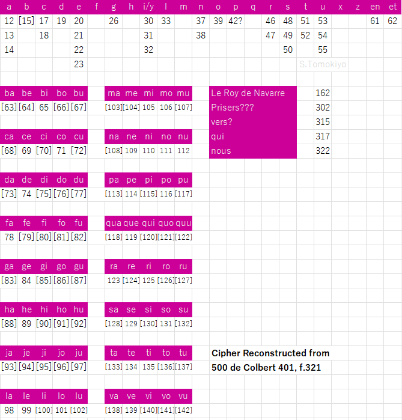

At a glanceKnown key applied · 103 of 108 figures
- The letter
- A news-sheet in the third person from Henry of Navarre’s court, La Rochelle, 10 July 1586, signed Henry and countersigned, sent to his envoy Jacques de Ségur-Pardaillan in Germany.
- Where
- Bibliothèque nationale de France, Cinq cents de Colbert 401, f. 333 (Gallica btv1b10035574w, view 369), the first volume of Ségur’s négociation with the German princes. Tomokiyo lists it under Henry III.
- The cipher
- Figures 12–62 for letters in alphabetical order with homophones, 63–142 a table of syllables (sixteen consonant rows by five vowels), numbers from 162 for names.
- How it was deciphered
- With Tomokiyo’s key, rebuilt from the interlinear decipherment of the sister letter f. 321; the decryption fixed four values he had left blank.
- What it says
- As soon as the reiters march, the king will mount; “il fault avancer la levée et la faire marcher le plustost qu’on pourra”.
- Still open
- Five name numbers (204, 189, 190, 166, 167); the key letter f. 321 cannot be transcribed figure by figure.
- Credit
- Satoshi Tomokiyo reconstructed the key; the contemporary decipherer of f. 321 is its source.
01 The letter and its key
Two leaves of the volume, ff. 321 and 333, use a key of their own. Tomokiyo rebuilt it from f. 321 (La Rochelle, 11 June 1586), where the decipherer struck through every figure and wrote the clear text between the lines, and posted the table on cryptiana as a cipher of Henry III. The letter of f. 321 is addressed to Clervant, Buhy and Ségur as conseillers en mon conseil d’estat et surintendans de ma maison et finances: the king is Navarre. The same volume holds three letters of 1585–86 in another key of the same design, recovered from the ciphertext alone (Navarre’s key A), and a 1583 letter in a third (f. 143). Each is a different cipher, with its own page; this entry was split from the key A page on 14 October 2026.

The design is that of key A with the letters shifted by eight (a 12–14, b 15–16, c 17–18 … u 53–55, x y z 56–59, et 60–62) and rows for h and j added to the syllable table. In key A the figures below 12 are letters; here they are doubles and nulls, which is what separates the two keys at a glance.
02 f. 333, La Rochelle, 10 July 1586
The clear text reports the duke of Mayenne’s army before Castillon, a plot to surprise Montauban, and Drake’s ravage of Santo Domingo and Cartagena. The cipher, in bold, with the name numbers in braces:
{162} desire fort d’avoir des nouvelles de {204} de {189} {190} … et leur advis sur le chemin [qu’i]l doit tenir et comment. Il attend en bonne devotion ce qui luy sera mandé pour l’effectuer. {167} assurer qu’aussi tost que les reistres marcheront il montera a cheval; {166} et son frere sont de bonne volonte; il fault avancer la levee et la faire marcher le plustost qu’on pourra. Le Roy de Navarre a envoyé comme vous savez le Sr de Vesin de la Marsilliere a Berne avec les ambassadeurs des quatre Cantons de Suisse …
162 is le Roy de Navarre in Tomokiyo’s table, the king’s own sign in his own cipher. The other five numbers are names that occur once each and are not in the table. Five figures disagree with the French and stand as written on a re-reading at twice the zoom (55 in advis, 19 and 31 in à cheval, 88 in fault, 20 in marcher): slips of the encipherer, or homophones the pattern does not predict.
03 Method and checks
- f. 333 was transcribed at twice the working zoom from the full-resolution Gallica image: 108 numeric figures, 62 distinct, of which 103 take a value from the extended table.
- A free annealer on f. 333 alone (the method that recovered key A from 461 figures) does not converge: the best of twelve seeds has 35 of 58 letter figures right, and a matched control of the same size fails the same way. An annealer that builds in the chancery’s design (homophones in alphabetical order) re-derives the letter key blind, every seed agreeing, with 54 of 58 letter figures (93 %) as in Tomokiyo’s table, and 90 % on a matched control; the syllable rows are the weak part at this size. The reading itself rests on Tomokiyo’s key.
- f. 321 cannot be transcribed independently: the decipherer’s stroke runs through the middle of every figure, and removing it removes the digits. One clean segment,
61 130 33 78 54 52= et si l fa u t, matches the interlinear et s’il fault.
04 What remains uncertain
- The name numbers 204, 189, 190, 166 and 167, each once and outside Tomokiyo’s table.
- A figure-by-figure check of Tomokiyo’s table against f. 321, which needs the leaf itself or a raking-light image.
05 Sources
- BnF, Cinq cents de Colbert 401, Négociation de M. de Segur, baron de Pardaillan, pour le roi de Navarre avec les Princes protestans d’Allemagne, 1584–1588, I, ff. 321 and 333, Gallica (views 359 and 369).
- S. Tomokiyo, “Henry III’s Figure Ciphers” in French Ciphers during the Reign of Henry III (cryptiana).
The transcription, the extended key and the controls are in the repository (targets/navarre1586/); the scripts are in targets/segur/. Manuscript rights: Bibliothèque nationale de France.